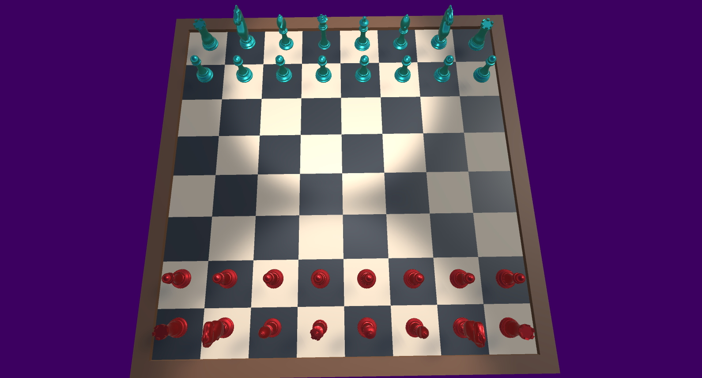

Chess
This is a chess game I made with a friend in Unity. We made it in September of 2022 in just 2 days for a game jam.
The game includes all the rules commonly seen in chess, including promotion and castling. En Passant is the only omission due to the time constraint on the project.
Because the game uses standard chess notation to input and output moves, chess games played on popular sites such as Chess.com and Lichess.org can be replayed in our game. Below is a gif of the game running in real time, where a game from chess.com is replayed. The time that the computer waits in between each move can be adjusted via a slider.